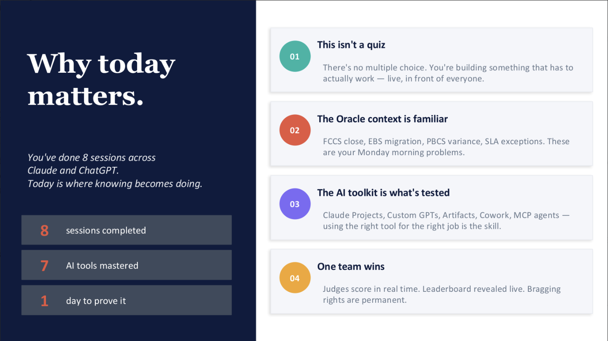

Teaching & Adoption
From AI awareness to hands-on adoption.
AI was everywhere. Adoption wasn’t.
We’d invested heavily in AI, but almost no one at the firm was using it. People didn’t know the tools existed, or didn’t know how to use them.
Knowing a tool exists isn’t the same as wanting to learn it.
I didn’t want to teach tools. I wanted people to use them.
So I designed an adoption program that moved people from curiosity to confidence — eight hands-on workshop sessions across Claude and ChatGPT, followed by a live case competition to make the learning stick.
Learn
AI fundamentals and where each tool fits, across Claude and ChatGPT.
Practice
Hands-on exercises with real work scenarios, not lecture slides.
Apply
The AI Build-Off — a live, 90-minute case competition against real Oracle Finance problems.
Reinforce
Tools carried back into real work, not left behind in the workshop room.
Eight sessions. One goal: make AI usable.
Eight sessions moved from AI fundamentals to hands-on practice with 7 tools, choosing the right model for the job along the way.

The AI Build-Off
90 minutes. Real Oracle problems. Real AI tools. One winner.

Oracle Finance Challenges
- EPM close cycles
- FCCS reconciliations
- EBS-to-Cloud migrations
- ARCS exceptions
Three parts, ninety minutes.
The Brief
A real Oracle Finance implementation scenario — EPM close cycles, FCCS reconciliations, EBS-to-Cloud migrations, or ARCS exceptions.
The Build
Teams used Claude and/or ChatGPT Custom GPTs to build a working AI solution in 90 minutes.
The Demo
No slide decks about what they could build — it had to actually run, live, in front of judges.
The teams weren’t just judged on the output.
They were evaluated across five weighted categories, with bonus points for advanced technique.
Bonus: +5 pts each for an MCP cross-app chain, a Cowork autonomous run, or client-ready output — up to +15 pts.
Knowing a tool exists isn’t the same as knowing how to use it.
The most valuable part wasn’t just learning the tools — it was learning when and how to use them. The Build-Off reinforced that choosing the right model or tool for the job was what made AI feel useful and approachable, not just impressive.
Project Gallery
Behind the build
